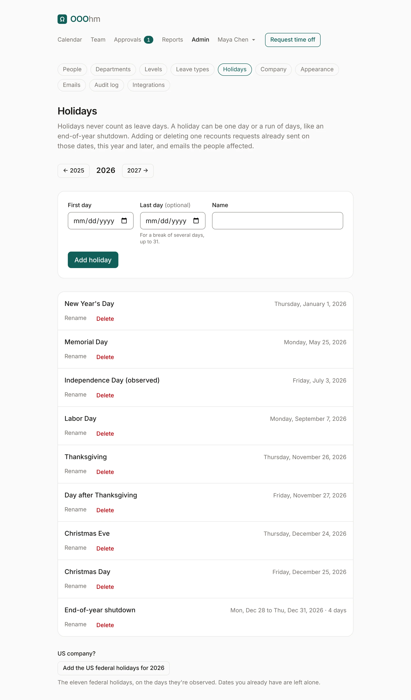

Holidays
Admin → Holidays lists the company's holidays for a year; the arrows move between years. Holidays never count as leave days, and they show on everyone's calendar.

Adding a holiday
Give the First day and a Name, then Add holiday. For a break of several days, like an end-of-year shutdown, also give a Last day: up to 31 days, and it may run into next year. A run of days shows as one entry, with its dates and how many days it covers, and you rename or delete it as one.

When holidays change
Adding or deleting a holiday recounts requests already sent on those dates, this year and later. If a request now takes fewer (or more) days, the person's balance follows, and they get a Recounted email that says what changed. Deleting asks first, since requests on those dates may count them as working days again.
US company?
Add the US federal holidays for the year adds the eleven federal holidays, on the days they're observed. Dates you already have are left alone.